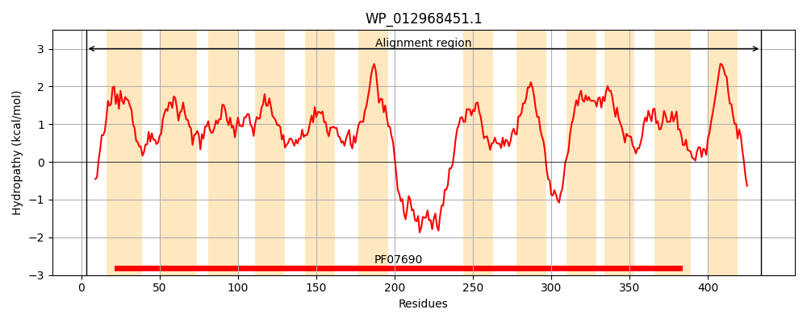
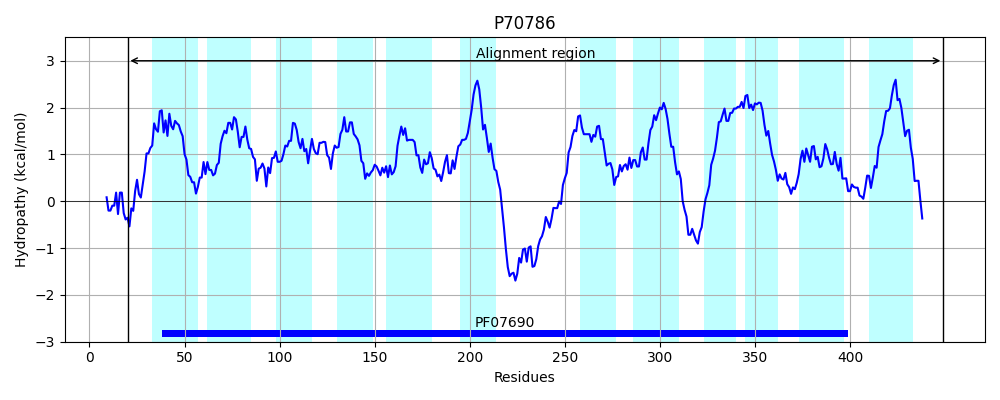
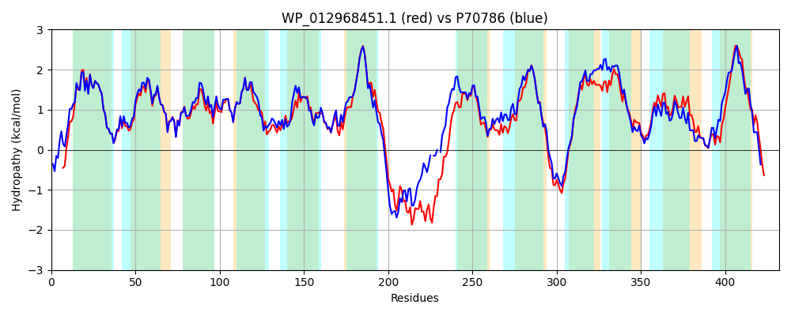

Hit Accession: P70786
Hit TCID: 2.A.1.14.3
Hit Description: gnl|BL_ORD_ID|11301 gnl|TC-DB|P70786|2.A.1.14.3 Putative tartrate transporter - Agrobacterium vitis.
Mach Len: 432
e:0.000000
Query TMS Count : 12
Hit TMS Count: 12
TMS-Overlap Score: 10.650000
Predicted Substrates:CHEBI:35396;tartrate
BLAST Alignment:
Score: 1696 , Bit scores: 657 bits, E-value: 0.0e+00, Alignment length: 432, Percentage identity: 74
Query: 3 NDLEKKVMRKVTLRIIPFIMLLYFIAFLDRVNIGFAALTMNQDLGFSPTVFGLGAGIFFLGYFLFEVPSNLILHKVGARIWIARVMITWGFVSGCMAFVQGTTSFYILRFLLGVAEAGFFPGIILYLSYWFPAARRAQVTAIFMAAAPLSTALGSPVSAALLEMHGFLGYAGWQWMFVLEAFPALVLGVVVLFFLTDRPAKAKWLTDQERAWLENAMQDEERARAAKQSHSSAWRGLADIRVLALALVYFGTSAGLYTLGIWSPQIIRSFGASSLEIGFLNAFPAVIGVIAMILWARHSDRTKERSWHVIGACLLAVAGLIYAGNVSTLFTVMLALTLVTVGISASKPPLWSMPTLFLSGPAAAAGIAAINSIGNLGGFVGPMMIGVIREQTGSYSWGLYFVAGLLALSALVVVILSARANKSPTAELPHPH 434
NDLE +V+RK+T RI+PFIMLLYFIAFLDRVNIGFAALTMNQDLGFS TVFG+GAGIFF+GYFLFEVPSNLIL+KVGARIWIARVMITWG VSG MAFVQGTTSFYILRFLLGVAEAGFFPGIILYLS+WFPA RRA VTA+FMAAAPLST LGSP+S AL+EMHG +G AGWQWMF++EA PAL+LGVVVLFFLTDRP KAKWLT++ER WL M E+ R SH S GLADIRV+ALALVYFGTSAGLYTLGIW+PQII+ FG S++E+GF+NA P + V+AM+LWARHSDRT ER+WHV+GACLLA AGL +A +++F V++ALT+V VGIS SKPPLWSMPT+FLSGPAAAAGIA INSIGNLGGFVGP MIG I++ TGS++ GLYFVAGLL +SA++ +IL+ + K+ + H
Sbjct: 20 NDLEARVLRKITFRIVPFIMLLYFIAFLDRVNIGFAALTMNQDLGFSSTVFGIGAGIFFVGYFLFEVPSNLILNKVGARIWIARVMITWGIVSGLMAFVQGTTSFYILRFLLGVAEAGFFPGIILYLSFWFPARRRAAVTALFMAAAPLSTVLGSPISGALMEMHGLMGLAGWQWMFLIEAAPALILGVVVLFFLTDRPEKAKWLTEEERNWLVKTMNAEQAGRGT-ASH-SVMAGLADIRVIALALVYFGTSAGLYTLGIWAPQIIKQFGLSAIEVGFINAVPGIFAVVAMVLWARHSDRTGERTWHVVGACLLAAAGLAFAAGATSVFMVLIALTIVNVGISCSKPPLWSMPTMFLSGPAAAAGIATINSIGNLGGFVGPSMIGWIKDTTGSFTGGLYFVAGLLLISAILTLILARSSPKAVETRTANQH 449 | Protein Hydropathy Plots: |
|---|
|  |  |
Pairwise Alignment-Hydropathy Plot:
|
|---|
|  |